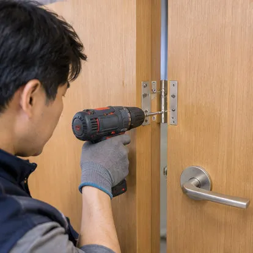

⑦ 수리업체·기사팀 전용
수리업체·기사팀 운영센터
기존 수리업체의 소속기사·일정·작업·지급증빙·조직권한을 보존합니다. 공사업체 계약 수수료와 별도입니다.
시연 전용 · 등록·승인, 소속기사, 배정과 일정. 실제 조직정보 전송은 차단됩니다.
기존 수리업체·소속기사 기능 보존 데모

파트너 소속기사 관리
기사별 자격, 지역, 활동 상태, 매칭 기록과 소속 관계를 관리합니다.

작업·방문 일정 관리
기사 일정과 현장 작업을 확인하고 이력 및 정산 자료와 연결합니다.
소속 기사 (시연용)
기사 샘플 A
시연수도·배관 / 문·창호 · 승인 대기

기사 샘플 B
시연전기·조명 / 설치 · 서류 검토
작업 배정·일정 (시연)
- 기사 샘플 A · 오후 2:00 · 예시 구역 A · 배관 방문 배정
- 기사 샘플 B · 오후 4:00 · 예시 구역 B · 전기 점검 배정
기존 기사팀 기능 메뉴
업체 등록 심사, 소속기사 관리, 작업 배정은 개발 서버의 기능입니다. 공개 미리보기에서는 예시만 제공합니다.
승인된 수리업체의 업무 안내
- 업체정보 · 등록서류 · 소속기사 · 기사일정 · 활동지역
- 작업배정 · 진행현황 · 정산 · 지급증빙 · 문의·공지
⑦ 수리업체 운영 분리
기사 개인 캐시는 본인에게 귀속되고 공식단가 10%만 적용합니다. ④ 공사업체 계약체결형 수수료는 이 화면에 적용되지 않습니다. 실제 조직 가입·소속·지급·정산은 서버 구현 전 시연입니다.